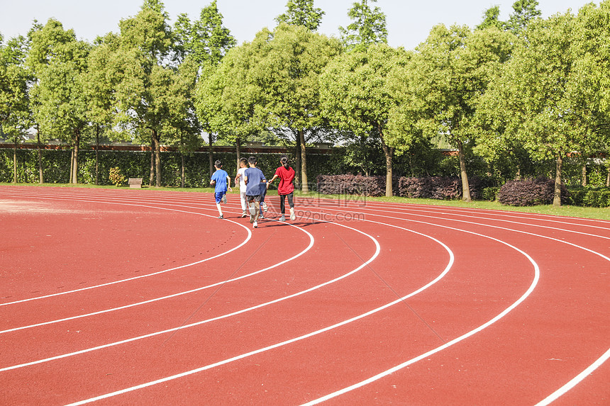

校园跑
傍晚时分，换上跑鞋，在美丽的校园里慢跑是我一天中最惬意的时光。耳机里放着喜欢的歌，晚风拂面，所有的烦恼都烟消云散。
从韵苑到沁苑，从图书馆到青年园，每一条熟悉的路线都充满了回忆。这不仅是锻炼身体，更是一种对生活的热爱和对青春的礼赞。
记录我的大学生活
傍晚时分，换上跑鞋，在美丽的校园里慢跑是我一天中最惬意的时光。耳机里放着喜欢的歌，晚风拂面，所有的烦恼都烟消云散。
从韵苑到沁苑，从图书馆到青年园，每一条熟悉的路线都充满了回忆。这不仅是锻炼身体，更是一种对生活的热爱和对青春的礼赞。